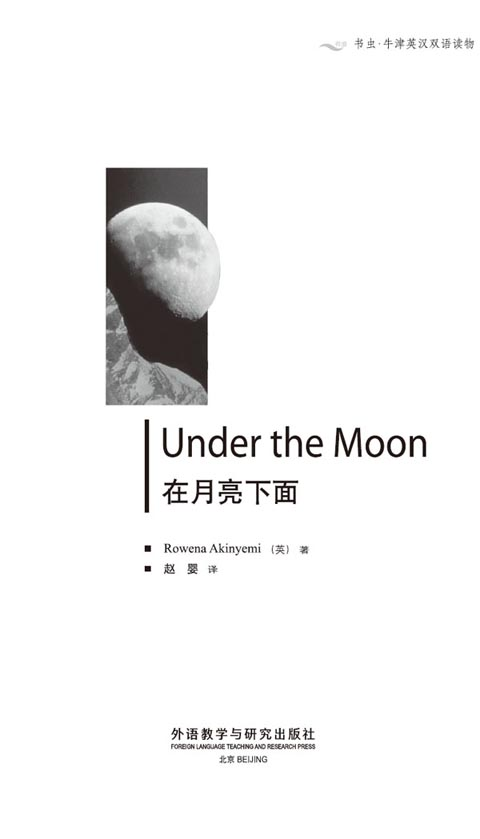
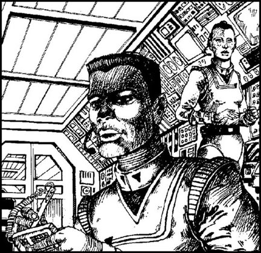
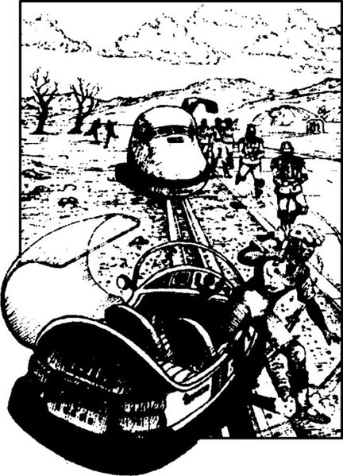
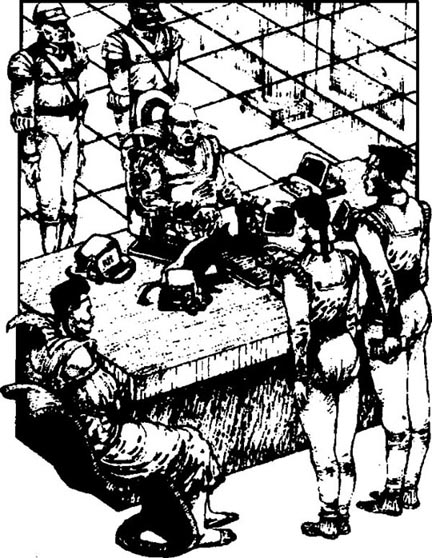
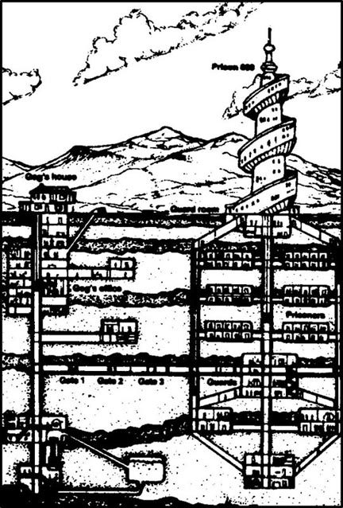
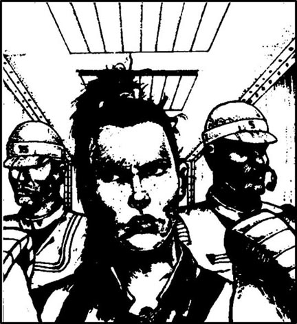
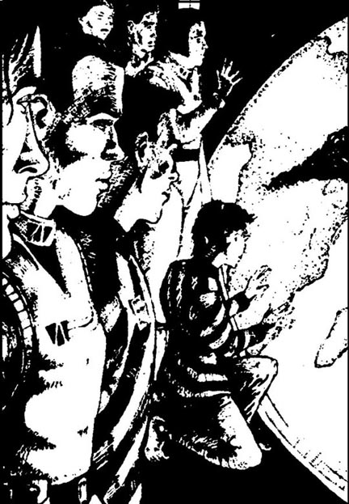
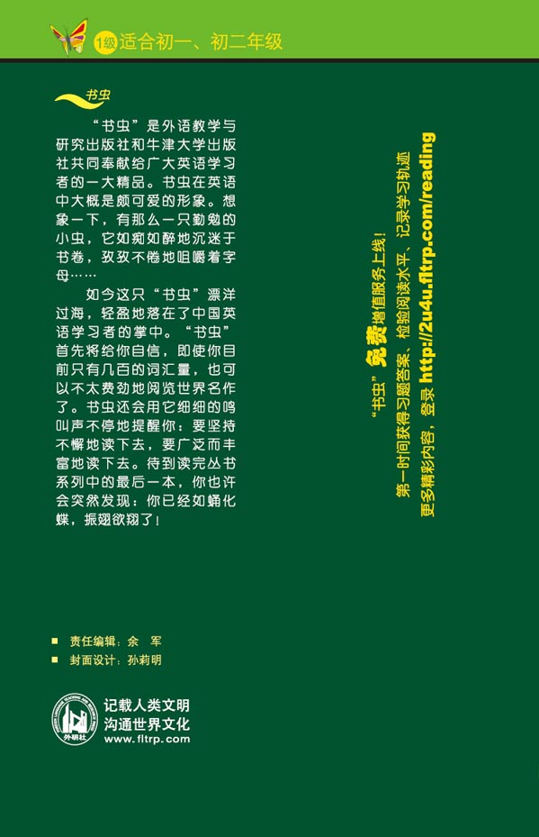

扉页

版权页
京权图字01-97-0354
Originally published by Oxford University Press, Great Clarendon Street, Oxford. © 1992
This edition is licensed for sale in the People's Republic of China only and not for export therefrom.
'Oxford' is a registered trademark of Oxford University Press.
只限中华人民共和国境内销售，不包括香港特别行政区、澳门特别行政区及台湾省。不得出口。
图书在版编目（CIP）数据
在月亮下面：英汉对照 ／（英）阿金耶米（Akinyemi, R.）著；赵婴译．— 北京：外语教学与研究出版社，1998.11（2014.11 重印）
书名原文：Under the Moon
（书虫·牛津英汉双语读物）
ISBN 978-7-5600-1470-8
Ⅰ．在… Ⅱ．①阿… ②赵… Ⅲ．科学幻想小说—英国—对照读物—汉、英 Ⅳ．H319.4：I
中国版本图书馆CIP数据核字（1998）第17019号
出版人： 蔡剑峰
责任编辑：余 军
封面设计：孙莉明
出版发行：外语教学与研究出版社
社 址：北京市西三环北路19号（100089）
网 址：http://www.fltrp.com
版 次：1998年11月第1版
书 号：ISBN 978-7-5600-1470-8
* * *
凡侵权、盗版书籍线索，请联系我社法律事务部
举报电话：(010)88817519 电子邮箱：banquan@fltrp. com
法律顾问：立方律师事务所 刘旭东律师
中咨律师事务所 殷 斌律师
简介
简 介
太阳是一个巨大的燃烧着的火球。没有来自太阳的光和热，我们就不能在地球这颗行星上生存。在这颗行星周围有臭氧层保护着我们免受太阳之火的伤害。但是如果臭氧层破裂，将会怎样呢？现在臭氧层上已经有了小洞，有人说那些小洞会变得越来越大——直到有一天再没有任何东西挡在我们和太阳的火焰之间。
事情发生在2222年。地球人制造了AOL——人工臭氧层。美丽的地球又有了1000年的生命。树又发芽了，下雨了，河里有了水……
但现在是2522年，人工臭氧层已经破裂。幼嫩的树林开始枯萎，河流也逐渐干涸。凯和瑞拉从他们的宇宙飞船里看到了这危险的情景，可他们又能做些什么呢？月亮下面的部族里有他们的朋友，可是路途遥远，而地球首领高格又不肯听从他们的指挥。
本书的作者罗维纳·阿金耶米是英国人。曾在非洲居住和工作了多年。现在她在剑桥工作和生活。
目录
1 AOL
1
AOL
Five hundred kilometres over Europe, Ship OM-45 moved north. In a room at the back of the ship, Kiah watched the numbers on the computer in front of him.
'Time for dinner,' Rilla said.
The numbers changed quickly and Kiah's eyes didn't move. Rilla went across the room to his table. She began to watch the numbers, too.
'What's wrong with the satellite?' she asked. She was a beautiful girl, about twenty years old, with long black hair and big eyes.
'Nothing's wrong with the satellite,' Kiah answered quietly. 'It's the AOL.' He began to write the numbers in the book on his table.
Suddenly, the numbers stopped changing. Kiah looked at Rilla. 'Over Europe,' he said. 'It's happening. The AOL is breaking up. There are big holes in the AOL and they're getting bigger.'
'You're right! Shall we see Captain Seru now, before dinner?'
Kiah stood up. He was nearly two metres tall, with dark eyes and hair. 'Yes, come on,' he said.
Quickly, they went to Captain Seru's room. They waited at the door.

'Come in!' Captain Seru called. She was a little woman with a fat face. 'Come in! Would you like a drink?'
'No, thank you,' Kiah answered. 'I'd like you to look at these numbers.' Kiah gave Captain Seru his book.
Captain Seru looked at the numbers. Suddenly, her face changed. 'No, no,' she said. 'I don't want to talk. It's late and I'm tired. Sit down and have a drink.'
Kiah and Rilla sat down. There was a big window in Captain Seru's room. Kiah looked out of the window at the dark sky. He saw the Moon. It was cold and white in the dark sky.
'Captain Seru,' he began. 'It's important. Look at those numbers carefully. The AOL is beginning to—'
'Stop!' Captain Seru stood up and put her hands in her pockets. She went to the window and looked at the sky.
'Three hundred years ago, Earth nearly died,' Rilla said. 'Earth stopped dying because of the AOL. But now, over Europe, the AOL is breaking up. We would like you to talk to Earth Commander.'
Captain Seru did not move. 'Do you remember Adai?' she asked. She didn't wait for an answer. 'I was on his ship, two years ago. One evening, the satellite gave us interesting numbers about the AOL. We went back to Earth and saw Earth Commander.' Captain Seru stopped speaking.
Rilla looked at Kiah. 'And then?' she asked Captain Seru.
'Gog was angry, very angry,' Captain Seru said. 'In the end, he sent Adai to the Moon. Adai's there now, Commander of the Moon colony, under the Moon.'
Kiah waited for a second or two. 'I know about Adai. But we need to talk to Earth Commander again. These numbers are worse.'
Captain Seru's face went red. 'You don't understand. I'm not going to talk to Gog. Last time, he sent me to a weather ship in the Antarctic! This is my first Ship for two years!' And Captain Seru began drinking.
Kiah stood up. 'Thank you, Captain Seru.'
Captain Seru said nothing.
Kiah and Rilla left the room, and walked slowly downstairs. The Ship was dark and quiet. It was eight o'clock and everybody was at dinner.
'What are we going to do next?' Rilla asked.
'I need to talk to Adai,' Kiah said.
'OK, talk to Adai. But he's far away on the Moon colony,' Rilla said. 'Let's visit Commander Zadak.'
'Zadak? Commander of Australia? He's famous!'
'Yes. He's my father's friend. He worked with my father in Brazil ten years ago. Perhaps he can help us.'
Kiah smiled. 'Good! We return to Earth next week. I can phone Adai from Kisangani and then we can go to Australia. But now, I'm hungry! Let's get some dinner.'
AOL artificial ozone layer. 人工臭氧层。
kilometre n. 1000 metres.公里。
computer n. an electronic machine that can quickly make calculations. 计算机。
quickly adv. with great speed. 迅速地。
satellite n. sth. made by people, moving round the Earth sending information back. 卫星。
beautiful adj. giving pleasure to the mind or sense. 美丽的。
hole n. a hollow space in sth. Solid, with an opening on one side. 洞，洞穴。
break up to break into small pieces. 破裂。
Captain n. man or woman in charge of a ship or aeroplane. 船长，机长。
suddenly adv. quickly and unexpectedly. 突然地。
Moon n. it moves round the Earth and shines at night. 月亮。
important adj. very significant, valuable, or necessary. 重要的。
pocket n. small bag sewn into and forming part of an artical of clothing , for carrying things in. 衣袋。
Commander n. man or woman in charge of many others. 司令。
remember v. be able to keep sth. in memory. 记得，记起。
colony n. place lived in by people from a different country. 殖民地，聚居于某一特定地区的一群人。
worse adj. bad to a greater degree or less good. 更坏，更差。
understand v. to know why someone behaves in the way that he does. 理解，明白。
weather n. the condition of the atmosphere, for example whether it is raining, sunny, hot, or windy in an area at a particular time. 天气。
famous adj. very well known. 著名的。
help v. do part of the work of another person; make it easier for sb. to do sth. 帮助。
人工臭氧层
1 人工臭氧层
OM-45号宇宙飞船在欧洲上空500公里的高度向北飞行。飞船尾部的一个房间里，凯注视着面前计算机屏幕上的数字。
“该吃饭了。”瑞拉叫他。
那些数字飞快地变换着，凯眼都不眨一下。瑞拉穿过房间走到他的桌旁。她也开始观察那些数字。
“卫星怎么了？”她问。她是个美丽的女孩，大约二十岁，黑黑的长发，大大的眼睛。
“卫星没问题，”凯平静地回答，“是人工臭氧层。”他伏在桌上，开始往一个本子上记录那些数字。
突然，那些数字停止了变换。凯望向瑞拉。“在欧洲上空，”他说，“已经开始了。人工臭氧层正在破裂。那上面本来就有大洞了，现在那些洞还在增大。”
“说得对，咱们现在去见塞鲁船长吧，待会儿再吃饭好吗？”
凯站起身。他身高几乎有两米，眼睛和头发都是黑色的。“好，走吧。”他说。
他们迅速朝塞鲁船长的房间走去。他们等在船长的门外。
“进来！”塞鲁船长喊道。她是个有张胖脸的小个子女人。“进来！喝点什么吗？”
“不用，谢谢，”凯说，“我想请您看看这些数字。”凯把自己的笔记本递给塞鲁船长。
塞鲁船长看了看那些数字。突然，她的脸色变了。“不，不，”她说，“我不想谈。时候不早了，我也累了。坐下喝点什么吧。”
凯和瑞拉坐了下来。塞鲁船长的房间里有一扇大窗子。凯透过窗子凝望黑色的天空。他看见了月亮。在黑色的天幕下月亮显得冰冷皎洁。
“塞鲁船长，”他开口了，“这事很重要。仔细看看那些数字。人工臭氧层正开始……”
“别说了。”塞鲁船长站起身把双手插进衣兜。她走到窗前注视着天空。
“300年前，地球几乎毁灭，”瑞拉说，“因为有人工臭氧层地球才幸免于难。但是现在，在欧洲上空，人工臭氧层正在破裂。我们希望您能和地球司令谈一谈。”
塞鲁船长没有动。“你还记得阿岱吗？”她问。不等回答，她接着说：“两年前我在他的船上。一天晚上卫星发回了关于人工臭氧层的一些不寻常的数据。我们回到地球去见地球司令。”塞鲁船长停了下来。
瑞拉看了一眼凯。“然后呢？”她问塞鲁船长。
“高格生气了，特别生气，”塞鲁船长说，“最后，他把阿岱分配到了月球。阿岱现在还在那儿，在月亮下面作月亮部族的司令。”
凯等了一两秒钟：“我知道阿岱的事。但是我们需要再和地球司令谈谈。这些数据比上次的还要糟。”
塞鲁船长的脸涨红了：“你不明白。我不会去跟高格说的。上次他把我发配到了南极的一艘气象飞船上。如今这是我第一艘待了两年的飞船。”塞鲁船长喝了一口水。
凯站起身：“谢谢您，塞鲁船长。”
塞鲁船长没说活。
凯和瑞拉出了门，脚步迟缓地下楼去了。飞船里寂静漆黑。8点钟了，大家都在吃饭。
“下一步咱们怎们办？”瑞拉问。
“我得跟阿岱谈谈。”凯说。
“好，跟阿岱谈谈。可是他现在在遥远的月亮部族，”瑞拉说，“咱们还是去见扎达克司令吧。”
“扎达克？澳大利亚司令？他很有名气呢！”
“是的，他是我父亲的朋友。10年前他和我父亲一起在巴西工作。也许他能帮忙。”
凯笑了，“好，咱们下周回地球。我可以在基桑加尼给阿岱打个电话，然后咱们就去澳大利亚。现在嘛，我可饿了。咱们吃饭去吧。”
2 Visit to Australia
2
Visit to Australia
On Friday, after three weeks in space, Kiah and Rilla finished work and left Ship OM-45 on a space plane to Kisangani. Kiah phoned Adai and Rilla phoned Commander Zadak in Australia. The next morning they took an aeroplane to Sydney. A taxi took them from the airport to Commander Zadak's office, some kilometres north of Sydney.
'Wait for us here,' Kiah said to the taxi driver.
Kiah and Rilla walked to the gate. About ten guards stood in front of the gate. Across the road, a train waited.
'Rilla, OM-45,' Rilla said. 'To see Commander Zadak at four-thirty.'
'Let me call the Commander's office,' the guard said.
Kiah and Rilla waited. It was hot and Kiah began to feel thirsty.
The guard came back. 'I'm sorry,' he said. 'The Commander can't see you.'
'But I talked to the Commander yesterday,' Rilla said. 'He wanted to see us at four-thirty.'
'The Commander is leaving on the train in three minutes,' the guard said.
Can we wait and see him here?' Kiah asked.
'No!' the guard shouted. 'Get out of here!'
Kiah and Rilla walked back to the taxi.

'Where's the driver?' Kiah asked.
'Look! He's sitting by that wall,' Rilla said.
Just then, Commander Zadak came out of the gate. He was a very tall, big man with blue eyes and a lot of white hair. Two guards marched in front of him, and two guards marched behind him. They all carried guns.
'There he is!' Rilla cried. 'Commander!' And she began to run along the road to him.
Commander Zadak did not stop. A guard opened the door of the train and the Commander got in. Slowly, the train began to move.
Kiah ran to the taxi and jumped in. Then he drove the taxi fast down the road. The taxi driver saw him and ran after him. The train began to move faster. Suddenly, Kiah drove the taxi off the road. He drove in front of the train and stopped.
The train came nearer. And then the train stopped, very near the taxi, and some guards jumped off. Kiah opened the door and got out of the taxi.
'Put up your hands!' the guards shouted.
Two of the guards began to hit Kiah.
'Stop that!' someone shouted. 'Bring him over here!' It was Commander Zadak.
Kiah stood in front of the Commander. Just then, Rilla arrived.
'Oh, it's you!' Commander Zadak said. He did not smile. 'Rilla, your father's going to be angry.'
'We want to talk to you, Commander,' Rilla said. 'It's very important.'
'Very well. I'm listening.'
Kiah began to talk. 'Two years ago, Adai told you about the holes in the AOL. Now they're worse. The AOL is breaking up over Europe. Please look at these numbers and this satellite picture.'
He gave his book to Commander Zadak and the Commander looked at the numbers.
'It's important, Commander,' Kiah said. In ten years Earth is going to die.'
'You stopped my train because of this?' Commander Zadak asked. 'Two years ago Adai talked to me about the AOL. Then he talked to Earth Commander, and what happened? Where is Adai now? Is the Moon colony helping the AOL?'
'We know about Adai, Commander,' Rilla said. 'But someone needs to talk to Earth Commander again.'
'I'm going to talk to Gog about rain, I can tell you that. Earth needs rain: there was no rain last winter. Half of Australia has no water and my trees here are dying. Without rain, many people are going to die. Is Gog going to understand that? I don't know!'
Commander Zadak began to walk back to his train. 'Move that taxi!' he called to his guards.
Some guards moved the taxi back to the road and then they jumped on to the train again. The train began to move.
'OK,' the taxi driver shouted. 'What are you going to do next? Drive my taxi into the river?'
Kiah smiled. He took some money from his pocket and gave it to the taxi driver.
The taxi driver looked at the money. 'OK, OK,' he said. 'Where now? Back to the airport?'
Kiah took Rilla's hand, 'Yes,' he said. 'Let's get back to Kisangani. We can phone Adai again tomorrow.'
space n. far from Earth where there is no air. 太空。
aeroplane n. flying machine with one or more engines. 飞机。
airport n. place where aeroplanes come down. 机场。
gate n. a door in a fence or wall. 大门。
guard n. a man or woman watching for danger. 卫兵。
across prep. from one side to the other side of. 从一边到另一边。
train n. a number of railway coaches, wagons, etc. joined together. 火车。
thirsty adj. feeling caused by a desire to drink. 渴的，口渴。
march v. walk as soldiers do，with measured steps. 阔步前进。
gun n. sth. that sends bullets from a metal tube. 枪。
ran vi. past tense of "to run"; move with quick steps. 跑步。
drove vt. past tense of "to drive"; control a car or a bus. 驾驶。
hit v. past tense of "to hit"; give a blow or stroke to. 打，打击。
dying adj. not likely to live or exist much longer. 快死的，行将完结的。
jump v. to move quickly off sth. or on to sth. 跳跃。
money n. coins or printed notes, given and accepted when buying and selling things. 钱，钱币。
访问澳大利亚
2 访问澳大利亚
这是个星期五，凯和瑞拉已经在太空飞行了三周。他们结束了工作，离开OΜ-45号宇宙飞船，乘航天飞机飞往基桑加尼。凯和瑞拉分别跟阿岱和澳大利亚司令扎达克通了电话。第二天早晨他们乘飞机来到悉尼。一辆出租车把他们从机场带到了悉尼以北几公里以外的扎达克司令的办公室。
“在这儿等我们。”凯吩咐出租车司机。
凯和瑞拉朝大门走去。门前站着大约有十个卫兵。一辆火车正等在马路对面。
“我叫瑞拉，OM-45号的，”瑞拉说，“扎达克司令4点半要接见我们。”
“我给司令办公室打个电话。”卫兵说。
凯和瑞拉站在那儿等着。天气很热，凯开始感到口渴。
那个卫兵回来了。“对不起，”他说，“司令不能见你们。”
“可是我昨天跟司令说过，”瑞拉说，“他答应今天4点半见我们。”
“再过三分钟司令就要坐火车出发了。”卫兵说。
“我们能不能在这儿等着见他一面？”凯问。
“不行！”卫兵喊了起来，“出去！”
凯和瑞拉回到出租车那儿。
“司机哪去了？”凯问。
“那不是嘛！在墙边坐着呢。”瑞拉说。
正说着，扎达克司令出现在大门口。他高大魁梧，蓝眼睛，长着一头浓密的白发。四个卫兵两前两后阔步行进护卫着他。他们都带着枪。
“他在那儿！”瑞拉喊了起来，“扎达克司令！”她随即顺着马路朝他跑去。
扎达克司令并没有停下脚步。一个卫兵打开火车门，扎达克跨了进去。火车缓缓地开动了。
凯奔向那辆出租车，迅速坐进车里。随即他开着车飞快地顺路而下。出租车司机看见了他，在后面紧追不放。火车开始加速。突然，凯把出租车开下了马路。直驶到火车前头停了下来。
火车越来越近了。在就要撞到出租车的时候，它停了下来。几个卫兵从车厢里跳了下来。凯打开车门从出租车里出来。
“举起手来！”卫兵们朝他喊。
两个卫兵对凯一阵拳打脚踢。
“住手！”有人喊了一声，“把他带到这儿来！”是扎达克司令。
凯站到了司令面前。正在这时，瑞拉赶到了。
“噢，是你。”扎达克司令说话了。他不带一丝笑容：“瑞拉，你父亲会生气的。”
“我们想和您谈谈，司令，”瑞拉说，“这事非常重要。”
“说吧，我听着呢。”
凯开口了：“两年前阿岱曾跟您谈过人工臭氧层上的洞。现在情况更糟了。欧洲上空的人工臭氧层已经开裂。请您看看这些数据和这张卫星照片。”
他把笔记本递给扎达克司令，扎达克看了看本子上的数据。
“这事非常重要，司令，”凯说，“10年后地球就要毁灭了。”
“你们拦住我的火车就为这事？”扎达克司令问，“两年前阿岱跟我谈过人工臭氧层的事。然后他又跟地球司令谈了这件事。之后又怎么样了呢？阿岱现在在哪？月亮部族能帮助修复人工臭氧层吗？”
“我们知道阿岱的事，司令。”瑞拉说，“但是得有人再去跟地球司令谈谈。”
“我可以告诉你们，我正准备去跟高格谈谈雨水的事。地球需要雨水：去年冬天没下雨。澳大利亚有一半地区没有水，我们的树都要枯死了。假如没有水的话很多人都要活不下去了。高格会理解这一切吗？我不知道。”
扎达克司令朝他的火车走去。“把那辆出租车弄走！”他朝卫兵们喊。
几个卫兵把出租车推回到公路上，然后跳上了火车。火车启动了。
“好啊，”出租车司机喊道，“接下去你们还想干什么？把我的出租车开到河里去？”
凯笑了。他从衣兜里拿出一些钱递给出租车司机。
出租车司机看了看那些钱。“好吧，好吧。”他说，“现在去哪？回机场？”
凯拉住瑞拉的手。“是的，”他说，“咱们回基桑加尼去。我们明天再给阿岱打个电话。”
3 Earth Commander
3
Earth Commander
The next day in Kisangani, Kiah and Rilla waited quietly in an office in Gog's house. Suddenly, Commander Zadak came into the office and gave some letters to the man behind the table. He saw the two young people and stopped in front of them.
'You again!' he said. 'What are you doing here?'
Kiah stood up. 'Good morning, Commander. We're here because we want to see Earth Commander.'
'I saw Earth Commander some minutes ago and talked to him about rain, 'Zadak said quietly. 'But he didn't listen. Your captain, Seru, was here earlier this morning and began to tell him about the holes in the AOL. But Gog doesn't want to hear about our planet. He's always talking about Mars. In the end, he's going to destroy Earth.'
'Please help us!' Rilla cried. 'Come and see Gog with us!'
'No.' Zadak looked at Kiah and then at Rilla with his blue eyes. 'I'm not talking to Gog again. And you—Gog isn't going to listen to you. Be careful—and good luck!'
Commander Zadak opened the door and left the office.
Rilla looked at Kiah. 'Earth Commander is a difficult man. I don't understand him.'
'Everyone is afraid of him, 'Kiah said. 'And Commander Zadak isn't going to help us.'

Kiah and Rilla waited. They waited and waited. At nearly twelve o'clock, a guard came into the office.
'Come!' he said.
Kiah and Rilla went with the guard. The house was big and old, with big windows and many doors. The guard went downstairs and opened one of the doors. There was nobody in the room.
'Wait here,' the guard said, and left.
Kiah and Rilla sat down on the expensive green and black chairs and looked at the expensive flowers on the tables. There were no windows in this room. Suddenly, the door opened and a tall, fat woman came in. Her name was Bel, and she was Gog's wife. She had a lot of long red hair and she wore an expensive blue dress. Bel liked expensive things. She carried a cat. The cat was black and white: half its face was black and half was white; half its body was black and half was white.
'Why are you here? Why do you want to see Earth Commander?' she asked.
Rilla stood up. 'How do you do?' she said. 'We want to talk to Earth Commander about the AOL. We have new numbers from the satellite.'
Bel's face was red. 'The AOL! Earth Commander knows about the AOL, and he is the best man—'
'Excuse me,' Kiah said quietly. 'We want to help Earth Commander.'
Bel began to laugh. 'Help? You?' The cat jumped down and walked across the room. 'How can you help? Why can't you understand? Listen. Earth Commander is working on the spaceship for Mars. It's difficult and expensive work.' The cat jumped on to Rilla's chair and looked at her with its yellow eyes. 'Two years ago, Adai wanted more money for the AOL—and Earth Commander sent him to the colony under the Moon. Now you're talking about the AOL. Do you want to go to the Moon, too?'
The door opened again and a different guard came in. 'Excuse me. Earth Commander is ready now.'
Bel stood up. 'You can see Earth Commander now,' she said coldly. 'But you're going to be sorry!'
The guard opened a different door, and Bel and the cat went into a beautiful room with expensive, very old tables and chairs. Rilla and Kiah went in behind them. There were no windows in the room, but a lot of pictures. There was Gog! The richest man on Earth; and the worst man on Earth. He was tall and fat, and without much hair. He sat behind a big table with a television, three computers and five telephones. He watched the television and didn't look at Kiah or Rilla. Two guards with guns stood behind him and two more guards stood near the door.
'Here they are!' Bel said. 'They aren't friends, oh no! They want to talk about the AOL, of course. No one understands about Mars—'
'That's all right, that's all right,' Gog said quickly. And then he looked up, first at Rilla and then at Kiah. His eyes were cold and green. 'I know about you two,' he said. 'Your captain told me about you. You're famous! Two children! You want to help planet Earth, is that right?' He waited. The cat jumped on to his table and sat down in front of the television.
'Yes, Commander,' Kiah began. 'The AOL is breaking up—'
'When? Tonight? Tomorrow?' Gog said angrily. 'I heard this old story two years ago, from Adai. Everyone comes here and wants money—money for the AOL, money for rain, money for the Moon colony. But I am Earth Commander, and you are nobody! I know about the AOL and the AOL is good for a hundred years!'
'But the satellite—' Kiah began again.
'Be quiet!' Gog cried. 'I am Earth Commander! I'm not going to give money for the AOL! Or for rain! Or for the Moon!' Gog looked at the guards near the door. 'Take them— take them away. I don't want to hear them.'
The guards moved behind Kiah and Rilla, and Bel began to laugh. 'Goodbye!' she said. 'You're not going to the Moon, you're going to prison! You can talk about the holes in the AOL there!'
came vi. past tense of "to come", move to be with somebody or to be at a place. 来，来到。
letter n. written message sent by one person to another. 信，信件。
Mars n. the planet fourth in order from the sun, and next to the earth. 火星。
destroy v. to kill, to ruin completely. 毁掉。
careful adj. taking care with the intention of avoiding danger. 小心的。
difficult adj. not easy, requiring effort, strength, or skill. 困难的。
expensive adj. high priced. 昂贵的。
dress n. one-piece outer garment worn by a woman or a girl. 妇女的外衣，裙子。
laugh v. make sounds and movements of the face and body, showing joy. 笑，大笑。
spaceship n. sth. that can carry people into space. 宇宙飞船。
planet n. a large object in space moving round the sun, like the Earth. 行星。
soon adv. in a short time. 很快。
prison n. a place where people are locked up. 监狱。
地球司令
3 地球司令
第二天在基桑加尼，凯和瑞拉在高格住处的一间办公室里静静地等待着。突然，扎达克司令走进办公室，递给办公桌后面的那个人一些信件。他看见了两个年轻人，在他们面前站住了。
“又是你们！”他说，“你们在这儿干嘛？”
凯站了起来：“早晨好，司令。我们来这儿是为了见地球司令。”
“几分钟前我见到了地球司令，还跟他谈了雨水的事。”扎达克平静地说，“但是他不听。你们塞鲁船长今天早晨来过，并且告诉他人工臭氧层有了洞。可是髙格不想听我们这颗星球的事。他总是谈论火星。最终他会毁了地球。”
“请您帮帮我们！”瑞拉喊着，“和我们一起去见见高格吧！”
“不，”扎达克用他蓝蓝的眼睛看了看凯，又看了看瑞拉，“我不会再跟高格谈了。而你们——高格不会听你们的。小心点——祝你们好运！”
扎达克司令打开房门走出了办公室。
瑞拉看了看凯：“地球司令是个不好相处的人。我真不知道他是怎么想的。”
“大家都怕他，”凯说，“扎达克司令也不准备帮助我们。”
凯和瑞拉等待着。他们等啊等。快12点时，一个卫兵走进办公室。
“来吧。”他说。
凯和瑞拉跟在卫兵后面。这是座宽敞的旧房子，有巨大的窗户，许多扇门。卫兵下了楼，打开了一扇门。房间里一个人也没有。
“在这儿等着。”卫兵说了一句就离开了。
凯和瑞拉在昂贵的绿黑相间的椅子上坐了下来，观赏着桌子上那些名贵的鲜花。这个房间没有窗子。突然，门开了，一个身高体胖的女人走了进来。她叫贝尔，是高格的妻子。她有一头浓密的红色长发，穿着一件昂贵的蓝色裙子。贝尔喜欢昂贵的东西。她抱着一只猫。那是只黑白相间的猫：猫脸一半黑一半白；猫身也是一半黑一半白。
“你们来这儿干嘛？你们为什么要见地球司令？”她问。
瑞拉站起身。“你好，”她说，“我们要和地球司令谈谈人工臭氧层的事。我们从卫星上获得了新数据。”
贝尔的脸涨红了：“人工臭氧层！地球司令知道人工臭氧层的事。他是最——“
“对不起，”凯平静地说，“我们想帮助地球司令。”
贝尔笑了：“帮助？你们？”那只猫跳了下来走到房间的另一头。“你们怎么帮他？你们怎么不明白呢？听着，地球司令正忙着制造去火星的飞船。这可是既费力又费钱的工作。”那只猫跳到瑞拉的椅子上，黄色的眼睛盯着她。“两年前，阿岱想为人工臭氧层要更多的钱——地球司令把他送到了月亮下面的部族。现在你们又在谈人工臭氧层，你们也想到月亮那儿去吗？”
门又开了，另一个卫兵走了进来：“对不起，地球司令可以接见了。”
贝尔站起身。“你们现在可以去见地球司令了，”她冷冰冰地说，“可你们会后悔的！”
卫兵打开另外一扇门，贝尔和那只猫走进一个摆满非常古老、昂贵的桌椅的漂亮房间。瑞拉和凯跟在他们后面。这间屋子也没有窗户，墙上挂满了图画。高格就在里面！这个世界上最富也最坏的人。他又高又胖，头发稀疏。他坐在一张大桌子后面，桌上放着一台电视，三台电脑，五部电话。只见他注视着电视屏幕，根本不看凯和瑞拉。两个持枪的卫兵站在他身后，还有两个站在门边。
“他们来了，”贝尔说，“他们不是朋友，噢，不是。当然，他们要谈谈人工臭氧层的事。没人懂得火星——”
“行了，行了，”高格快速地打断她。之后他抬起头看看瑞拉又看看凯。那是一双冷漠的绿眼睛。“我知道你们俩，”他说，“你们船长跟我说起过你们。你们名气不小啊！两个孩子！你们想拯救地球，是不是？”他等着回答。那只猫跳上他的桌子坐在电视机前。
“是的，司令，”凯开口了，“人工臭氧层正在破裂——”
“什么时候？今天晚上？明天？”高格生气地说，“两年前我就听阿岱说过这个老掉牙的故事。每个人都到这儿来要钱——为人工臭氧层，为下雨的事，为月亮部族。但是我是地球司令，你们什么也不是！我知道人工臭氧层，它能坚持一百年！”
“可是卫星——”凯又开口了。
“少废话！”高格叫了起来，“我是地球司令！我不会为人工臭氧层花钱！也不为下雨的事花钱！也不为月亮！”高格看了一眼门口的卫兵，“把他们——把他们带走。我不想听他们讲话。”
卫兵们在凯和瑞拉身后行动起来，贝尔笑了。“再见了！”她说，“你们不会去月球，你们要去监狱！你们可以在那儿谈论人工臭氧层上的洞！”
4 Prison 888
4
Prison 888
Commander Zadak was in his room at the biggest hotel in Kisangani. Suddenly, he heard the phone.
'Commander?' someone said, very quietly. 'A man and a woman—from Ship OM-45—in prison 888.' The phone went dead. Zadak put the phone down, stood up, and left his room.
Prison 888 was a big white building without windows, near Gog's house. There were a lot of guards at the gate, and some more guards marched past the building. All the guards carried guns.
Commander Zadak walked across the road to the prison. 'I want to visit someone. My name is Commander Zadak.'
'I'm sorry, Commander,' a guard said. 'We can't open the gate. Nobody can go in without a letter from Earth Commander.'
'That's all right,' Zadak said, and walked along the road, past the prison.
A guard ran behind him. 'Excuse me, Commander,' he said quickly. 'Please come back tonight. I can open the back gate at midnight. You can see the two people from Ship OM-45.'
Zadak looked at the guard. 'Your captain's going to kill you.'

The guard smiled. 'My captain phoned you about the two people from OM-45. He's the brother of Captain Seru.'
Zadak didn't smile. 'The prison commander is going to kill you and your captain.'
'It doesn't matter,' the guard said. 'We want to help.'
'Midnight,' Zadak said, and walked away.
At midnight there were four guards at the front gate of prison 888, and there was one guard at the back gate. The guard opened the gate and Zadak went in. The guard said nothing. They walked downstairs into a big room. A lot of prisoners slept on the floor because there were no beds or chairs. Kiah and Rilla sat on the floor near the door.
'You can talk for five minutes,' the guard said quietly. 'The next guard arrives at 12.15.'
Kiah and Rilla stood up. 'Good evening, Commander,' they said.
Zadak looked at the prisoners. 'Why are all these people here?' he said to Kiah and Rilla. 'They're in prison because Gog doesn't like them. I talk to Gog about rain, I talk to him about the AOL, but he never listens. Today, someone told me about some fires in the new forest here in Africa; but Gog doesn't want to hear about those fires.' Zadak laughed angrily. 'And he doesn't want to hear about my trees in Australia. He never listens to me. He's always thinking about Mars, Not about our beautiful planet Earth.'
Kiah listened carefully. 'Take it easy, Commander,' he said quietly. 'Please talk to Adai. Adai wants to help. He can come back from the Moon and help you.'
'No,' Zadak said. 'I phoned Adai this afternoon. He's a good man and he wants to help. But I don't need help. I'm going to stop Gog: I'm going to kill him.'
Kiah closed his eyes for a minute. 'Gog's guards have guns. They can kill you, Commander,' he said. 'You need more people to help. Wait for Adai. He can help you to look for more people.'
'No, Kiah,' Zadak said quietly. I don't want more people. Adai can come back to Earth after Gog is dead—after I am dead, perhaps. I don't want Adai to die, too.'
'Excuse me, Commander,' the guard said. He looked at the clock near the door.
'OK. Let's go,' Zadak said to the guard. He looked at Rilla and then at Kiah. His eyes were very blue. 'Goodbye,' he said.
'Goodbye, Commander,' Kiah said.
'Be careful!' Rilla cried. 'And good luck!'
Early that morning, Earth Commander's house was quiet.
A guard opened the door.
'Good morning, Commander Zadak,' he said. 'Earth Commander isn't in his office.'
'That's all right,' Zadak said. 'I can wait.'
Zadak went upstairs and waited.
At eight o'clock Bel came into the room. 'Good morning, Commander,' she said. 'You're early this morning. Are you happier today? Earth Commander was very angry with you yesterday. Don't begin talking about rain or the AOL today.'
Zadak smiled, but his blue eyes were cold. 'No,' he said. 'I'm not going to talk about rain today.'
Just then, Gog came into the room. He looked at Zadak. 'What's wrong? Why are you here at eight o'clock in the morning?'
Zadak took his gun from his pocket. Gog saw the gun and his face went white. His eyes were dark and afraid. For a second nobody moved.
Suddenly, Bel's black and white cat ran into the room.
'Guards! Guards!' Bel shouted.
The cat jumped at Zadak, and Zadak hit the cat away from him. Bel ran across the room to Gog and Zadak, at that second, shot at Gog. But Bel was between him and Gog. She gave a cry and fell to the floor. Her hair looked very red on the black floor.
'No!' 'Gog cried. 'You shot Bel!'
Three guards ran into the room with their big guns and stood in front of Gog.
'Kill him!' Gog shouted, and began to help Bel.
Zadak looked at the guards and then at Bel and Gog. Kiah was right: he was going to die.
'I'm sorry, Kiah. I'm sorry, Adai,' he said quietly.
The guards shot Zadak. Slowly, he fell to the floor.
phone n. machines that can carry the human voice through wires. 电话。
smile v. show pleased, happy, amused or other expression on the face. 微笑。
prisoner n. people Locked locked in the prison. 犯人。
slept v. past tense of "to sleep"; rest with the eyes closed. 睡觉。
kill v. put to death. 杀，杀死。
clock n. machine that can show the time. 钟表。
cry n. any loud sound expressing fear, anger. 叫喊。
fell vi. past tense of "to fail", to go down suddenly. 倒下。
second n. there are sixty of them in one minute. 秒，秒钟。
888号监狱
4 888号监狱
在基桑加尼最大的饭店，扎达克司令正待在他的房间里。突然，电话铃响了。
“司令吗？”有人非常平静地说，“一个男的和一个女的——从OM-45号飞船上来的——正在888号监狱里。”电话挂断了。扎达克放下听筒，站起身，离开了他的房间。
888号监狱座落在高格家附近，是座没有窗户的高大的白色建筑。监狱门口有许多卫兵，另外还有一些卫兵从监狱前走过。所有的卫兵都带着枪。
扎达克司令穿过马路来到监狱门前，说道：“我是扎达克司令。我要见一个人。”
“对不起，司令，”一个卫兵说，“我们不能开门。没有地球司令的信谁也不能进去。”
“好吧，”扎达克说。他顺着马路从监狱旁边绕了过去。
一个卫兵从后面赶了上来。“对不起，司令，”他说得很快，“请您今天晚上来吧。午夜的时候我可以打开后门。您能见到从OM-45号宇宙飞船来的那两个人。”
扎达克注视着那个卫兵：“你们队长会杀了你的。”
那个卫兵笑了：“是我们队长给您打电话，告诉您OM-45号那两个人的事的。他是塞鲁船长的哥哥。”
扎达克没有笑：“监狱长会把你和你们队长都杀掉的。”
“没关系，”那个卫兵说，“我们愿意帮忙。”
“午夜。”扎达克说了一声就走了。
午夜时分，888号监狱正门前有四个卫兵，还有一个卫兵守在后门。那个卫兵打开后门，扎达克走了进去。卫兵什么也没说。他们走下楼梯进了一个大房间。那个房间里没有床也没有椅子，许多犯人睡在地板上。凯和瑞拉坐在门边的地板上。
“你们可以谈五分钟，”那个卫兵悄悄说，“下一班卫兵12点一刻来。”
凯和瑞拉站起身：“晚上好，司令。”他们说。
扎达克看了看那些犯人：“这些人为什么被关在这儿？”他对凯和瑞拉说道，“高格不喜欢他们，所以把他们关了起来。我跟高格说了下雨的事，还有人工臭氧层的事，可是他根本不听。今天有人告诉我非洲那些幼林失火了，可是高格根本不想听火灾的事。”扎达克愤怒地冷笑了一声：“他也不想知道澳大利亚我那些树林的事。他从来不听我的。他总想着火星，从来不想想我们美丽的地球。”
凯认真听着。“别太在意，司令，”他平静地说，“请您和阿岱谈谈。他会帮忙的。他可以从月球回来帮助您。”
“不行，”扎达克说，“今天下午我给他打了电话。他是个好人，也愿意帮忙。可我不需要帮助。我要阻止高格——我要杀了他。”
凯闭目凝神了一会儿。“高格的卫兵有枪。他们会杀了您的，司令。”他说，“您需要多一些人帮忙。等等阿岱。他能帮您找更多的人。”
“不，凯，”扎达克平静地说，“我不想要更多的人。阿岱可以在高格死了以后——也许我死了以后再回来。我不希望阿岱也来送死。”
“对不起，司令。”那个卫兵说。他看了看门边挂着的钟。
“好吧，咱们走。”扎达克对卫兵说。他看了看瑞拉又看了看凯。他的双眼晶莹碧蓝。“再见了。”他说。
“再见，司令。”凯说。
“要小心！”瑞拉喊着，“祝您好运！”
那天清晨，地球司令的家里非常安静。一个卫兵打开房门。
“早晨好，扎达克司令，”他说，“地球司令不在办公室。”
“没关系，”扎达克说，“我可以等。”
扎达克来到楼上开始等待。
8点钟的时候贝尔走了进来。“早晨好，司令，”她说，“今天您可真早。您今天高兴点了吗？地球司令昨天跟您发了很大的火。今天可别上来就谈什么雨水或者人工臭氧层的事了。”
扎达克笑了，可他的蓝眼睛里透着寒光。“不会的，”他说，“今天我不准备谈雨水的事。”
正说着，高格走了进来。他看着扎达克：“这是怎么了？你为什么早晨8点钟就来这儿？”
扎达克从衣兜里掏出了枪。高格看见了那支枪，脸色煞白。他目光灰暗，充满恐惧。一时间大家都僵在了那儿。
突然，贝尔那只黑白相间的猫跑了进来。
“卫兵！卫兵！”贝尔喊了起来。
那只猫朝扎达克扑过来，扎达克把猫抡到一边。贝尔朝房间另一头的高格跑去，就在这时，扎达克朝高格开枪了。可是贝尔正好跑到他和高格之问。她叫了一声就倒在了地板上。在黑色地板的映衬下她的头发显得越发红艳。
“不！”高格大喊，“你打死了贝尔！”
三个拿着长枪的卫兵跑了进来，站在高格前面。
“杀了他！”高格叫着，一边去救贝尔。
扎达克看了看那几个卫兵，又看了看贝尔和高格。凯说得对：他活不成了。
“凯，阿岱，我对不起你们。”他平静地说。
卫兵们朝扎达克开了枪。他缓缓地倒在地板上。
5 Forest fires
5
Forest fires
Later that morning, four guards took Rilla to Gog's office. His face looked tired and his eyes were red.
'Leave us,' he said to the guards. Then he looked at Rilla. 'Tell me about Kiah. When did you first meet him? Is Zadak his friend? What do they talk about?'
Rilla looked down at the floor and said nothing.
'Come on, tell me!' Gog said angrily. He waited, but Rilla said nothing. 'Tell me about Zadak, then. Your father and Commander Zadak were friends. Now, you're talking to Zadak about the AOL. I know that. What is Zadak saying?'
'Why? Why do you want to know about Commander Zadak?' Rilla asked.
'I'm asking the questions, not you,' Gog said. 'Did you see Zadak yesterday?'
'The AOL is important, not Commander Zadak,' Rilla said.
Gog watched Rilla carefully. 'Zadak is dead.'
'No!' Rilla cried.
'He is dead,' Gog said again. 'You lost your friend, here in this building, early this morning. My guards shot him.'
Rilla's face went white, 'What happened? Tell me!'
'I'm going to tell you one thing,' Gog said angrily. 'I'm going to destroy Australia. I'm going to burn Zadak's new forest there. You can tell all your friends! Zadak wanted to kill me, but I killed him. He wanted money for rain, money for the AOL, and now he's dead. You can tell all those prisoners in prison 888. They wanted to stop me, but they can't now. I'm going to Mars! Bel always wanted to go to Mars.' He began to hit the table with his hand. 'I'm going to leave this dead planet! Nobody can stop me!'

'You're crazy,' Rilla said. 'You killed Zadak, but one day someone is going to kill you.'
Gog stood up. His face was tired and he looked ill. 'Be quiet!' he said. 'Guards! Take her away. Back to 888.'
The guards came in and took Rilla out.
'What happened?' she asked them. 'Commander Zadak is dead; why is Gog angry?'
The guards said nothing. But after they returned to the gate of 888, a guard said to Rilla, very quietly: 'Bel is dead. Zadak didn't shoot Gog, but he shot Bel, before the guards shot him.'
A guard. took Rilla into the prison, and soon she was with Kiah again.
'What happened?' Kiah asked. 'Tell me.'
Rilla put her hands over her face and began to cry. 'Zadak is dead,' she began. 'He didn't kill Gog. He killed Bel before the guards shot him, and now Gog is going to destroy Australia.'
Kiah sat down on the floor next to Rilla. His face was sad. 'Don't cry,' he said quietly.
Three or four prisoners came across the room.
'What's the matter?' they asked.
'Zadak is dead,' Kiah said. 'But Bel is dead, too.'
'What's going to happen next?' someone asked. But nobody answered.
The next afternoon, Captain Seru's brother took Kiah and Rilla to a little room at the back of the prison.They sat down, and five minutes later Captain Seru arrived. Nobody smiled.
'You were right, Captain,' Kiah said. 'Gog sent us to prison because we told him about the holes in the AOL.'
Seru smiled. 'You were right, Kiah,' she said. 'Those satellite numbers were very bad. I began to tell Gog, but he didn't listen to me.'
'Would you like some coffee? And some sandwiches?' Seru's brother asked.
'Yes, please,' Seru said. 'I'm hungry.' She looked at Kiah and Rilla. 'Things are very bad.'
'What's happening?' Rilla asked.
'You know about Zadak? And Bel?'
'Yes. Gog told Rilla yesterday,' Kiah said.
Seru smiled, but her eyes were not happy. 'Gog talked to me this morning,' she said. Her brother came in with the coffee and sandwiches and Seru began to eat. 'Gog wants to know about Zadak, and about you,' she said. 'He's going to kill us all, I think, before he goes to Mars.'
Suddenly, Rilla felt ill. 'I can't eat now!' she cried. But she took some coffee and began to drink. 'Let's get out of here,' she said. 'Perhaps we can get a plane to Brazil and go to my family.'
'Difficult,' Seru said. 'Last night fires began in the new forest in Europe, and they're moving across Europe. The fires in Africa are burning fast. Gog began to destroy Zadak's forest in Australia yesterday.'
'Did you phone Adai?' Kiah asked.
'Adai! You never stop talking about Adai. What can he do?' Rilla said. She felt angry.
Seru looked at Rilla for a minute. 'Yes, I phoned Adai before I came here. I told him about Zadak and Bel, and about the fires. He asked about you, Kiah. He can't come down at Kisangani airport because Gog is there with a lot of his guards. Ship MARS 4 is nearly ready and Gog is watching it. He wants to leave Earth tomorrow.'
'How can Adai help us?' Rilla asked. 'He can't shoot all the guards here.'
Captain Seru finished the last sandwich. 'Let's leave that to Adai,' she said. 'We can do nothing.'
'Are you going to stay here?' Kiah asked.
'Yes,' Seru answered. 'Adai is coming to the prison after he arrives on Earth.'
'Oh yes?' Rilla said tiredly. 'But when? Gog can kill us before Adai comes.'
'No, he can't,' Seru's brother said. 'You can stay here, in this room. Gog's guards are all afraid—afraid of the fires, afraid of the people. They aren't going to look for you here.'
angrily adv. with anger, the feeling that makes people want to fight. 生气地，愤怒地。
lost vt. past tense of "to lose", no longer have. 失去。
burn v. to be on fire. 着火；燃烧。
crazy adj. mad , foolish. 疯，傻的。
sad adj. unhappy. 难过，伤心。
meet v. come face to face with. 见面，会见。
sandwich n. two pieces of bread with meat in between. 三明治。
felt v. past tense of "to feel"; learn about by touching. 触摸。
fire n. sth. burning. 火，火焰。
ill adj. in bad health. 病，生病。
森林大火
5 森林大火
那天上午发生了这些事情之后，四个卫兵把瑞拉带到了高格的办公室。高格一脸疲惫，眼睛红红的。
“出去吧。”他吩咐卫兵。之后他盯着瑞拉：“跟我说说凯。你第一次见到他是什么时候？扎达克是他的朋友吗？他们都谈些什么呢？”
瑞拉低头看着地板，一言不发。
“说呀，告诉我！”高格生气地喊。他等待着，瑞拉仍旧什么也没说。“那就说说扎达克吧。你爸爸和扎达克司令是朋友。现在你把人工臭氧层的事告诉了他。我知道这些。扎达克他怎么说？”
“为什么？为什么你想知道扎达克司令的事？”瑞拉问。
“是我在提问，不是你，”高格说，“昨天你见到扎达克了吗？”
“人工臭氧层才是重要的，不是扎达克司令。”瑞拉说。
高格凝视着瑞拉：“扎达克死了。”
“不！”瑞拉叫了起来。
“他死了，”高格重复了一遍，“你失去了你的朋友，就在这座楼里，就在今天清晨。我的卫兵开枪打死了他。”
瑞拉的脸白了：“出了什么事？告诉我！”
“有一件事我得告诉你，”高格恼怒地说，“我要毁掉澳大利亚。我要把扎达克新栽的森林烧毁，你可以告诉你所有的朋友。扎达克想杀死我，可我杀了他。他想为下雨的事，为人工臭氧层要钱，可现在他死了。你可以告诉888号监狱里所有的人。他们想阻止我，可现在他们不可能了。我要去火星！贝尔一直想去火星的。”他用手敲打着桌面，“我要离开这个死亡的星球！没人能阻拦我！”
“你疯了，”瑞拉说，“你杀了扎达克，但总有一天也会有人把你杀掉的。”
高格站起身。他面色疲惫，憔悴不堪。“住嘴！”他喊着，“卫兵！把她带走。带回888号监狱去。”
卫兵们把瑞拉带了出去。
“出了什么事？”她问他们，“扎达克司令死了，高格为什么那么生气？”
卫兵们什么也没说。可是到了888号监狱门口，一个卫兵小声告诉瑞拉：“贝尔死了。扎达克没打着高格，可他打死了贝尔，然后卫兵才朝扎达克开的枪。”
一个卫兵把瑞拉带进监狱，很快瑞拉就回到了凯身边。
“出了什么事？”凯问，“告诉我。”
瑞拉捂着脸哭了起来。“扎达克死了，”她说，“他没能杀死高格。他打死贝尔之后那些卫兵杀了他，现在高格要毁掉澳大利亚。”
凯在瑞拉身边坐了下来。“别哭了。”他轻轻对瑞拉说，脸上流露出悲伤的神情。
三四个犯人走了过来。
“出了什么事？”他们问。
“扎达克死了，”凯说，“贝尔也死了。”
“以后还会出什么事呢？”一个人问。可是没人回答。
第二天下午，塞鲁船长的哥哥把凯和瑞拉带到监狱后面的一个小房间。他们坐了下来，5分钟后，塞鲁船长来了。大家都很严肃。
“船长，不出您所料，"凯说，“我们告诉高格人工臭氧层有洞的事，他就把我们送进了监狱。”
塞鲁笑了。“你说得对，凯，”她说，“那些卫星数据的确很糟糕。我试着跟高格说，可他根本不听我的。”
“要点咖啡吗？还有三明治？”塞鲁的哥哥问。
“好吧，要一点，”塞鲁说，“我饿了。”她看着凯和瑞拉：“情况非常糟糕。”
“出了什么事？”瑞拉问。
“你知道扎达克的事吗？还有贝尔？”
“瑞拉知道，高格昨天告诉她了。”凯说。
塞鲁笑了，可她的目光中却没有喜悦的神情。“高格今天早晨跟我谈过了。”她说。她哥哥拿着咖啡和三明治走了进来，塞鲁边吃边说：“高格想知道关于扎达克的情况，他也想知道关于你们的情况。”她说，“我想，他要把我们大家都杀掉，然后再去火星。”
突然，瑞拉感到很难受。“我现在吃不下去！”她喊着，一边倒了杯咖啡喝起来。“咱们出去吧，”她说，“也许我们能搭上去巴西的飞机回我家去。”
“很困难，”塞鲁说，“昨天夜里欧洲的新森林起了火，火势正向整个欧洲蔓延。非洲的大火越烧越猛。昨天高格开始摧毁扎达克在澳大利亚的森林。”
“你给阿岱打电话了吗？”凯问。
“阿岱！你怎么老是说起他，他能干什么呢？”瑞拉非常生气。
塞鲁注视了一阵瑞拉：“是的，我来之前给阿岱打过电话。我告诉了他扎达克和贝尔的事，还有火灾。他还问到你，凯。他不能降落在基桑加尼机场，因为髙格在那儿，他还布置了许多士兵。火星4号宇宙飞船已经基本准备就绪，高格正密切关注着它的进展。他想明天离开地球。”
“阿岱怎么帮助我们呢？”瑞拉问，“他也不能把这儿所有的卫兵都打死。”
塞鲁船长吃完了最后一个三明治。“这个问题就留给阿岱吧，”她说，“我们什么也做不了。”
“您准备待在这儿吗？”凯问。
“是的，”塞鲁说，“阿岱抵达地球之后就会到这座监狱来的。”
“噢，真的吗？”瑞拉疲惫地说，“可是什么时候呢？阿岱来之前高格就会把我们杀了。”
“不，他不会，”塞鲁的哥哥说，“你们可以待在这儿，在这个房间里。髙格的卫兵都害怕——怕那些火灾；怕那些人。他们不会到这儿来找你们的。”
6 Spaceship to the Moon
6
Spaceship to the Moon
And so they waited. And waited. Rilla slept in her chair. Kiah and Seru talked quietly. Seru's brother came and went. Most of the prison guards ran away with the prisoners. Seven or eight people—some prisoners and some guards—didn't want to run away, so they came into the room and waited, too.
Ten o'clock came, then eleven o'clock. It was very quiet. Seru walked up and down the room. Kiah sat next to Rilla. Seru's brother came into the room again.
'It's after midnight,' he said.
Just then, they heard the noise of a plane. Kiah stood up. 'Come on,' he said. 'Let's get out of the building.'
Quietly, they left the building. It was a dark, hot night. There were no guards in front of the prison, so they went to the gate and waited there. Suddenly, they saw the plane. It was a little plane, and it came down on the road in front of the prison!
Rilla took Kiah's hand. 'You were right,' she said. 'I'm sorry.'
Kiah smiled. He began to feel happy. 'That's all right. I understand. I know Adai very well, and you don't.'
The plane stopped and someone opened the door. Kiah ran across to the plane.

'How many can you take?' he called. 'There are twelve of us.'
'That's all right,' someone said. 'Quickly, the spaceship is waiting.'
The twelve people got into the little plane, and the plane began to move. Rilla looked at the captain of the plane. He was tall, with brown hair. He looked nice. Was this the famous Commander Adai?
'Where is the spaceship?' Kiah asked.
'At the old airport,' the man said. 'One of the fires is moving very quickly across the new forest. It's going to arrive at the west of Kisangani before tomorrow, I think. But the old airport is OK.' Then the man looked at Kiah and smiled warmly. 'My brother,' he said. 'My little brother, in prison 888!'
'Your brother? Commander Adai?' Rilla asked. 'But you didn't tell me that!'
Kiah smiled. 'Nobody knew,' he said. 'But now—it doesn't matter now. Everyone can know.'
The little plane came down at the old airport, south of the town.
'Let's be careful,' Adai said. 'We don't want someone to shoot us before we leave.
The spaceship was dark. Quickly, everyone jumped down from the plane and ran across to the spaceship. Soon, the spaceship left Earth, and everyone looked down at the burning planet. They saw the dark smoke over Africa, and here and there, through the smoke, the red, angry fires.
'The fires are destroying the forest very quickly,' Seru said.
Adai put his hand on Kiah's arm. 'I'm sorry about Zadak,' he said.
'I wanted him to wait,' Kiah said. 'I wanted him to talk to you.'
Adai's face was sad. 'He didn't want me to die,' he said quietly. 'He was a good man. And now he's dead.'
'And Gog is going to Mars,' Seru said.
'Mars? He's crazy! Mars isn't ready for people,' Adai said.
'But Gog wants to go, and so he's going,' Seru said. 'Tell us about the Moon colony. That isn't ready: you need more money.'
'No, I don't,' Adai said. 'The Moon colony is ready. I asked for more money because of Zadak: I wanted to give him money for rain. But Gog didn't listen; he wanted all Earth's money for the spaceship to Mars.'
'I don't want to leave Earth,' Rilla said sadly. She felt tired and afraid.
Adai smiled warmly at Rilla. 'Nobody wants to leave Earth,' he said. 'But under the Moon is the best home for us now. Wait and see. The Moon colony is a beautiful, wonderful country, with rivers and rain, forests and flowers, buildings—and the first town. You can visit Earth again soon, and bring more people to the Moon colony. We all want to help Earth, because it's our first home. I know that. At the same time, you are going to be happy under the Moon.'
Suddenly, someone cried: 'Look at the Moon!'
And through the window of the spaceship they saw the Moon before them, cold, white and beautiful; and under the Moon, there was the Moon colony!
midnight n. 12 o' clock at night. 午夜。
smoke n. visible vapour coming from a burning thing. 烟，烟雾。
ready adj. in the condition for doing some thing. 准备好的。
country n. land of a nation. 国土；国家。
river n. natural stream of water flowing to the sea or to a Lakelake. 河流。
happy adj. lucky, feeling pleased. 高兴。
飞往月球的宇宙飞船
6 飞往月球的宇宙飞船
于是他们等待着。等了又等。瑞拉蜷在她的椅子里睡着了。凯和塞鲁悄悄地谈着什么。塞鲁的哥哥进来一趟又出去了。监狱里的大部分卫兵都和犯人一起逃走了。只有大约七八个人——包括犯人和卫兵，不愿意逃走，于是也到这个房间里一起等待。
10点钟，11点钟。房间里安静极了。塞鲁在房间里走来走去。凯坐在瑞拉身边。塞鲁的哥哥又走了进来。
“已经过了午夜了。”他说。
就在这时，他们听到一阵飞机的轰鸣。凯站起身。“来啊，”他说，“咱们到楼外面去。”
他们悄悄地离开了大楼。这是个漆黑闷热的夜晚。监狱前面没有卫兵，于是他们来到大门口，在那儿等着。突然，他们看到了一架飞机。那是一架小飞机降落在了监狱门前的马路上！
瑞拉抓住凯的手。“你说得对，”她说，“我很抱歉。“
凯笑了。他高兴起来：“没关系，我明白。我非常了解阿岱，而你并不了解他。”
那架飞机停了下来，有人打开了舱门。凯朝飞机跑了过去。
“你们能带多少人？”他喊着，“我们一共12个人。”
“没问题，”有人答道，“快点，宇宙飞船正等着呢。”
12个人都上了那架小飞机，飞机启动了。瑞拉看了看机长。他身材髙大，头发是棕色的。这个人看上去很不错。他是不是那位著名的阿岱司令？
“宇宙飞船在哪儿？”凯问。
“那个旧机场，”那人说，“一股大火正飞速掠过新森林。我想明天之前这火就会烧到基桑加尼西部。好在那个旧机场还能用。”说完，那人注视着凯，脸上带着亲切的笑容。“我的弟弟，”他说，“我的小弟弟，住进了888号监狱！”
“他是你哥哥？阿岱司令？”瑞拉问，“可你从来没跟我说过！”
凯笑了。“以前没人知道，”他说，“可是现在——现在没关系了。大家都可以知道。”
小飞机在城南的旧机场降落了。
“咱们要小心，”阿岱说，“可不能在出发之前中了别人的枪子儿。”
宇宙飞船笼罩在一片黑暗中。大家迅速跳下飞机朝飞船跑去。很快，飞船离开了地球，大家俯视着下面这颗燃烧着的星球。他们看到了非洲上空的黑烟，以及黑烟下面到处肆虐着的愤怒的火红烈焰。
“大火很快就会把森林烧毁。”塞鲁说。
阿岱把手搭在凯的臂膀上。“扎达克的事真让我难过。”他说。
“我曾希望他再等等，”凯说，“我本来想让他和你谈谈。”
阿岱神情悲切。“他不想让我送死，”他低声说，“他是个好人。可现在他死了。”
“还有，高格要到火星去。”塞鲁船长说。
“火星？他疯了！火星还不能住人。”阿岱说。
“可高格要去，他马上就要出发了。”塞鲁说，“跟我们讲讲月亮部族吧。它还不成形，你还需要很多钱。”
“不，我不需要，”阿岱说，“月亮部族已经准备就绪。我要更多的钱是为了扎达克：我想给他钱解决雨水的问题。可是高格不听；他要把地球所有的钱都用在去火星的宇宙飞船上。”
“我不想离开地球。”瑞拉忧伤地说。她感到又累又恐惧。
阿岱对瑞拉温和地笑了笑。“没有人愿意离开地球，”他说，“可是现在我们最好的家园在月亮下面。等着看吧。月亮部族是个美丽迷人的国家，有河流，有雨水，也有森林和鲜花，还有楼房——以及第一座城镇。你很快就可以再回到地球去。然后带更多的人到月亮部族去。我们都想帮助地球，因为它是我们的第一个家。我理解你。同时，你也一定会在月亮下面生活得愉快的。”
突然，有人喊了一声：“快看月亮！”
透过飞船的窗子，他们看到了眼前的月球：冰冷，皎洁，美丽；而在月亮下面，他们看到了月亮部族！
Exercises
Exercises
A Checking your understanding
Chapter 1 Who said these words in the chapter?
1 'There are big holes in the AOL and they're getting bigger.'
2 'We would like you to talk to Earth Commander.'
3 'Adai's there now, Commander of the Moon colony, under the Moon.'
4 'This is my first ship for two years!'
5 'Zadak? Commander of Australia? He's famous!'
Chapter 2 Which person in the chapter...
1 ... phoned Commander Zadak in Australia?
2 ... opened the door of the train?
3 ... drove the taxi in front of the train and stopped?
4 ... looked at the numbers in Kiah's book?
5 ... was going to talk to Gog about rain?
Chapter 3 Write answers to these questions.
1 What is Gog always talking about?
2 Who came into the office at nearly twelve o'clock?
3 What did Bel carry?
4 What things were on Gog's big table?
5 Who began to laugh?
Chapter 4 Are these sentences true (T) or false (F)?
1 There were no guards at the gate of prison 888.
2 Zadak talked to Rilla and Kiah in prison.
3 Zadak wanted Adai to die, too.
4 Bel's cat jumped at Zadak.
5 Gog shot Zadak.
Chapter 5 Who said these words in the chapter?
1 'Tell me about Kiah. When did you first meet him?'
2 'I'm going to leave this dead planet!'
3 'Let's get out of here.'
4 'I phoned Adai before I came here.'
5 'Gog's guards are all afraid—afraid of the fires, afraid of the people.'
Chapter 6 Are these sentences true (T) or false (F)?
1 Most of the prison guards ran away.
2 The captain of the plane was the famous Commander Adai.
3 Commander Adai did not know Kiah.
4 Nobody in the spaceship saw the dark smoke over Africa.
5 Gog wanted all Earth's money for the spaceship to Mars.
B Working with language
1 Use these words to join the two sentences together.
and then because but
1 The guard opened the gate. Zadak went in.
2 A lot of prisoners slept on the floor. There were no beds or chairs.
3 'I talk to Gog about the AOL. He never listens.'
4 'All these people are in prison. Gog doesn't like them.'
5 Zadak smiled. His blue eyes were cold.
6 The cat jumped at Zadak. Zadak hit the cat.
2 Put these sentences in the right order. Then check your order with Chapter 6.
1 Soon, the spaceship left Earth.
2 The twelve people got into the little plane.
3 Quietly, they left the building and waited at the gate.
4 Next, the plane came down at the old airport, south of the town.
5 The plane came down on the road in front of the prison.
6 Quickly, everyone jumped down from the plane and ran across to the spaceship.
C Activities
1 You are a TV news reporter. Interview Gog, or Adai.
2 Write about a person that you like in the story.
封底
